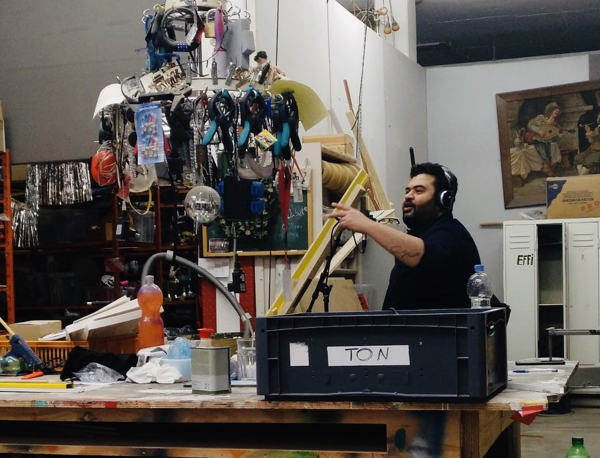

Tum na jane
Ein klassischer Bollywood-Song, neu gedacht für ein zeitgenössisches Gitarrenquartett.

Tum na jane ist ein klassischer Bollywood-Song, der zum Ausgangspunkt für einen neuen musikalischen Ansatz wurde.
Diese Version ist eine Hommage an die legendäre indische Sängerin Lata Mangeshkar. Der emotionale Charakter des Originals wird in eine völlig andere Klangwelt übertragen.
Gemeinsam mit dem Sänger Suhaib Ehsan und dem Cologne Guitar Quartet entwickelte ich ein neues Arrangement für vier Gitarren und Stimme.
Ich wollte den Klang des Quartetts erweitern, indem ich Kontrabass einbezog und die Stimmen der Gitarristen als Chor einsetzte.
Das Ziel war nicht, das Originalarrangement nachzubilden, sondern den Song an einen neuen Ort zu führen: Seine Melodie und emotionale Wirkung bleiben erhalten, während eine zeitgemäße Ästhetik entsteht.
Das begleitende Video wurde auf den Straßen von Köln gedreht und bringt einen alten Bollywood-Song in die Stadt, in der diese neue Version entstanden ist.
- Arrangement
- Instrumentation
- Production
- Cologne Guitar Quartet
- Suhaib Ehsan
- Gitarrenquartett
- Kontrabass
- Vokalchor
Die Performance ansehen
Gefilmt auf den Straßen von Köln.